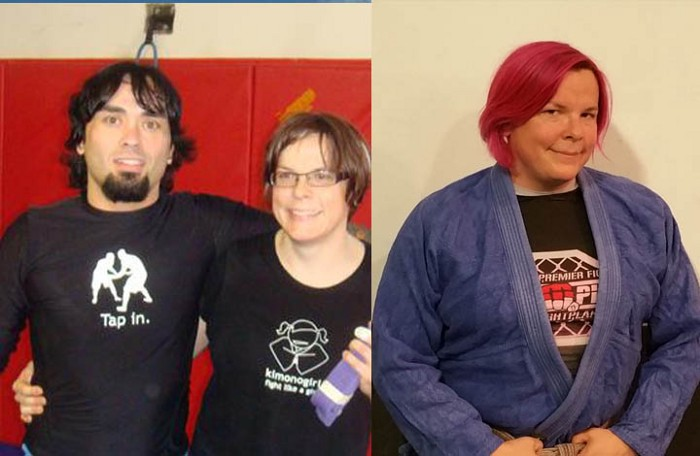

Artigos sobre Defesa Pessoal

Conheça a primeira Trans faixa-preta de Jiu-Jitsu
O jiu-jitsu brasileiro é muito peculiar como hobby. Isso meio que mergulha o praticante profundamente em um estilo de vida especial...
Leia MaisConheça a primeira Trans faixa-preta de Jiu-Jitsu
O jiu-jitsu brasileiro é muito peculiar como hobby. Isso meio que mergulha o praticante profundamente em um estilo de vida especial...
Leia Mais
“Sem ver diferenças”: É possível diversidade e inclusão nos treinos de artes marciais?
Uma das minhas partes favoritas do desafio de esgrima deste ano...
Leia Mais
“Sem ver diferenças”: É possível diversidade e inclusão nos treinos de artes marciais?
Uma das minhas partes favoritas do desafio de esgrima deste ano...
Leia Mais